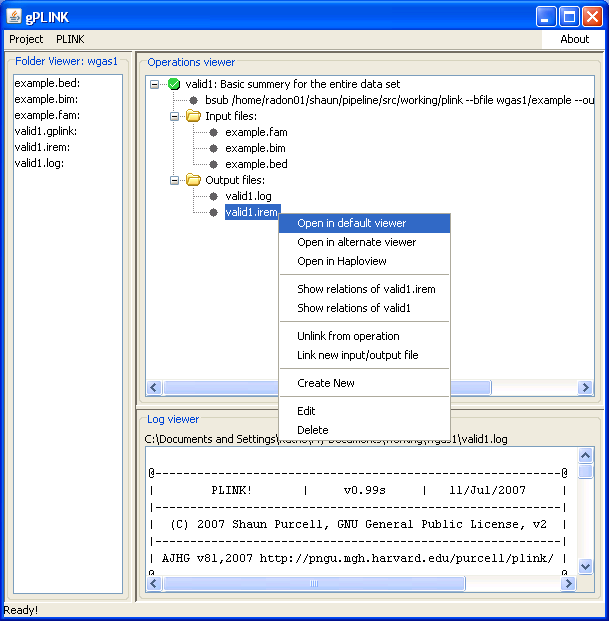

|  |
Viewing output filesOnce the file has been downloaded, right-clicking on the file again will show options to view the (now local) file. The default and alternate viewers refer to the two programs mentioned in the configuration step: in this case, WordPad (the default for Windows) and XEmacs (the selected alternate viewer). If no alternate viewer has been selected, this second menu option will not appear.Previous | Next |